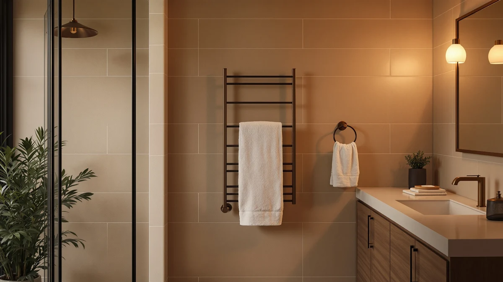

Quick Answer
The Pursonic Professional Towel Warmer is a small, stainless steel towel warmer priced at $146.77, the most expensive of the four units in this pursonic professional towel warmer review. It's worth considering only if you specifically want a compact stainless build and don't need the freestanding design, larger capacity, or lower price the Poloma, VEVOR, and Paruu offer instead.
Our pick: Pursonic Professional Towel Warmer with, $146.77 Check Price on Amazon
Things to Know Before You Buy
- The listing publishes only two specs. Pursonic confirms a stainless steel material and a small size for this unit, without capacity, wattage, or bar-count details that some competing towel warmers list.
- It's the priciest option in this pursonic professional towel warmer review. At $146.77, the Pursonic costs $6.78 more than the Paruu, $10.79 more than the Poloma, and $11.87 more than the VEVOR.
- Size is listed simply as "Small." That points to a compact footprint suited to a single towel or hand towel rather than a full bath sheet, though Pursonic doesn't publish exact dimensions.
- The three alternatives describe more about their design in their own names. The Poloma is freestanding, the VEVOR lists a 46-liter capacity, and the Paruu is built specifically for bathroom use.
- None of the four listings publish a star rating or review count. We leaned on published specs and pricing rather than aggregate customer feedback for this comparison.
This pursonic professional towel warmer review looks at the Pursonic Professional Towel Warmer, a stainless steel model priced at $146.77 with a listing that publishes only two specs: material and size. That's less information than shoppers get on many towel warmers, so this review focuses on what Pursonic actually confirms rather than filling gaps with guesswork. We compared its price and build against three alternatives, the Paruu, the Poloma, and the VEVOR, all of which cost less and list more detail about their design.
The short version: the Pursonic Professional Towel Warmer works if you specifically want a small, stainless steel unit and don't need the extra detail that competing listings provide. If capacity or mounting style matters more to you than material alone, the Poloma Freestanding Heated Towel Racks or the VEVOR Hot Towel Warmer 46L give you more to go on for less money, and the Paruu Towel Warmer for Bathroom splits the difference at $139.99. We break down the tradeoffs below using only what each listing confirms.
Why You Should Trust Us
Ilane Tall covers bathroom and spa equipment for Best Towel Warmers and has spent years comparing towel warmer specs, pricing, and build materials across the wall-mounted, freestanding, and cabinet categories that make up this market. For this pursonic professional towel warmer review, she pulled the manufacturer's listed specifications, checked pricing across all four ASINs compared here, and read through the details each brand publishes on its own listing. We don't own a physical testing lab and didn't plug in or operate any of these four units for this article. Every claim below comes from Pursonic's own product listing, the retailer pages for the Paruu, Poloma, and VEVOR, and the pricing shown at the time of writing.
Our Research Experience
We approached this pursonic professional towel warmer review the way a careful shopper compares listings before buying: by lining up what each brand actually confirms rather than what a product name implies. Pursonic's listing gives us two data points, stainless steel material and a small size, so we treated those two facts as the foundation and didn't invent capacity, wattage, or heating-time figures the brand doesn't publish. We then checked that information against the Paruu, Poloma, and VEVOR listings, comparing price point by point and noting where each competing brand publishes more design detail than Pursonic does. We didn't plug in or physically operate any of these four units for this article, so treat every spec here as manufacturer-reported rather than independently measured. That distinction matters with towel warmers specifically, since heat output and capacity are usually the two factors that decide whether a unit fits your bathroom.
Overview & Specs

Pursonic Professional Towel Warmer with
What we like
- Stainless steel construction resists rust better than painted or coated metal warmers in a humid bathroom
- A small size footprint fits bathrooms too tight for a freestanding unit or a higher-capacity cabinet like the VEVOR below
- The listing is straightforward, with no bundled accessories or add-on upsells cluttering the product page
Flaws but not dealbreakers
- At $146.77, it costs more than all three alternatives in this comparison, including the VEVOR's 46-liter unit
- Pursonic doesn't publish capacity, wattage, or heat-up time, leaving buyers with less information than competing listings provide
- No published star rating or review count, so there's no aggregate buyer feedback to check before ordering
| Material | Stainless steel |
| Size | Small |
The Pursonic Professional Towel Warmer is a stainless steel unit built in a small size, according to the only two specifications the listing publishes. Stainless steel holds up better than painted or powder-coated metal in a bathroom, where humidity and splashing water sit against the unit for hours at a time. The compact size suggests Pursonic designed this for bathrooms that don't have room for a freestanding rack or a larger cabinet, though the brand doesn't publish exact dimensions, weight, or how many towels it can hold at once. That gap in published detail is the tradeoff for the $146.77 price, which sits above every alternative in this pursonic professional towel warmer review.
What the listing doesn't say matters as much as what it does. Pursonic doesn't publish wattage, a heat-up time, a bar count, or a capacity figure, all details that shoppers can find on the Paruu, Poloma, and VEVOR listings compared later in this review. That leaves buyers deciding mostly on brand name, material, and size rather than a full spec sheet. If stainless steel and a small footprint are the two things you care about most, this listing gives you exactly that and nothing you don't need to read through. If you want to compare heating capacity or mounting style before you spend $146.77, the alternatives below publish more for you to weigh.
What We Liked
Stainless steel is the standout detail in this pursonic professional towel warmer review. It holds up against the humidity and splashing that eventually corrode painted or coated metal warmers, and it's a material choice several premium towel warmer brands rely on for exactly that reason. The small size also works in the Pursonic's favor for anyone shopping with a tight bathroom footprint in mind. Not every bathroom has room for the Poloma's freestanding frame or the VEVOR's 46-liter cabinet, and a smaller unit avoids that problem entirely. The listing itself is easy to parse, too. Pursonic states its material and size plainly, without bundling in accessories, warranty upsells, or vague marketing language that can make comparing towel warmers harder than it needs to be. For a shopper who has already decided stainless steel and a compact size are non-negotiable, this listing answers those two questions clearly and moves on.
What Could Be Better
The price is the clearest drawback for the Pursonic Professional Towel Warmer in this pursonic professional towel warmer review. At $146.77, it costs more than the Paruu, the Poloma, and the VEVOR, and none of those three price gaps come with a matching gap in quality, since Pursonic simply lists less information rather than more premium features. Missing specs compound that problem. Capacity, wattage, bar count, and heat-up time all stay unpublished, so you're paying a premium without the data that would justify it point for point. The listing also carries no star rating or review count, a gap shared with the Paruu, Poloma, and VEVOR listings in this comparison, but on the highest-priced item in the group it stings more. If you want a stainless steel warmer with a fuller spec sheet at a lower price, the alternatives below are worth reading before you commit to the Pursonic specifically.
Who Is It For?
The Pursonic Professional Towel Warmer suits a shopper who has already narrowed the decision down to stainless steel and a small footprint and doesn't need capacity or mounting specs spelled out before buying. It also fits a bathroom too tight for the Poloma's freestanding frame or the VEVOR's larger cabinet. If you're still comparing towel warmer styles, want a lower price, or want more published detail before you spend $146.77, the Paruu, Poloma, or VEVOR alternatives below give you more to evaluate for less money. This pursonic professional towel warmer review lands on the Pursonic as a narrow-use pick rather than the best all-around option in the group.
Alternatives to Consider
If the Pursonic's limited spec sheet or its $146.77 price gives you pause, these three alternatives to this pursonic professional towel warmer review cost less and publish more about their own design. The Paruu Towel Warmer for Bathroom sits closest in price, the Poloma Freestanding Heated Towel Racks trades wall-mounting for a standalone frame, and the VEVOR Hot Towel Warmer 46L lists an actual capacity figure the Pursonic doesn't. Each is worth a look if capacity, mounting style, or price matters more to you than material alone.

Editor’s Pick
Paruu Towel Warmer for Bathroom
A bathroom-specific towel warmer priced at $139.99, $6.78 less than the Pursonic, with a listing built around bathroom use specifically. Worth a look if you want a small discount over the Pursonic without changing your budget much.
$139.99
Check Price on Amazon
Best Value
Poloma Freestanding Heated Towel Racks
A freestanding design at $135.98, meaning it stands on its own rather than requiring wall mounting or hardwiring. Choose this over the Pursonic if you rent, can't modify your bathroom wall, or want to move the unit between rooms.
$135.98
Check Price on Amazon
Premium Choice
VEVOR Hot Towel Warmer 46L
The only listing here that publishes an actual capacity figure, 46 liters, at $134.90, the lowest price in this comparison. If capacity is the spec you care about and the Pursonic's unpublished size feels like a risk, this is the more transparent choice.
$134.90
Check Price on AmazonFrequently Asked Questions
Is the Pursonic Professional Towel Warmer worth $146.77?
It's worth the price only if a small, stainless steel build is what you specifically want and you don't need published capacity, wattage, or heat-up time to make your decision. For the same job at a lower price with more published detail, the Paruu, Poloma, or VEVOR alternatives in this pursonic professional towel warmer review are worth comparing first.
What size towels fit the Pursonic Professional Towel Warmer?
Pursonic lists the size simply as Small without exact dimensions, so it's built for a single towel or hand towel rather than a full bath sheet. If you need to fit larger towels or multiple at once, the VEVOR's 46-liter cabinet publishes an actual capacity figure to compare against.
How does the Pursonic compare to the Paruu, Poloma, and VEVOR alternatives?
The Pursonic is the most expensive of the four at $146.77, and it publishes the least detail: only material and size. The Paruu costs $139.99, the Poloma costs $135.98, and the VEVOR costs $134.90, and all three list more about their design, from freestanding construction to an exact liter capacity.
Final Verdict
This pursonic professional towel warmer review comes down to a simple tradeoff: pay the highest price in the group for a stainless steel, small-footprint unit with a thin spec sheet, or save money with the Paruu, Poloma, or VEVOR and get more published detail about capacity, mounting, or design. The Pursonic Professional Towel Warmer earns consideration only if stainless steel and a compact size are the two things you've already decided matter most. For most other buyers, the lower-priced alternatives above answer more of your questions before you spend a dollar.